Τα ρυθμίζετε μία φορά και μετά τα ξεχνάτε. Γι' αυτό δεν πιάνουν χώρο στο μενού:
είναι όλα πίσω από ένα κουμπί, Ρυθμίσεις, κάτω κάτω στο αριστερό μενού.
Η σελίδα των ρυθμίσεων
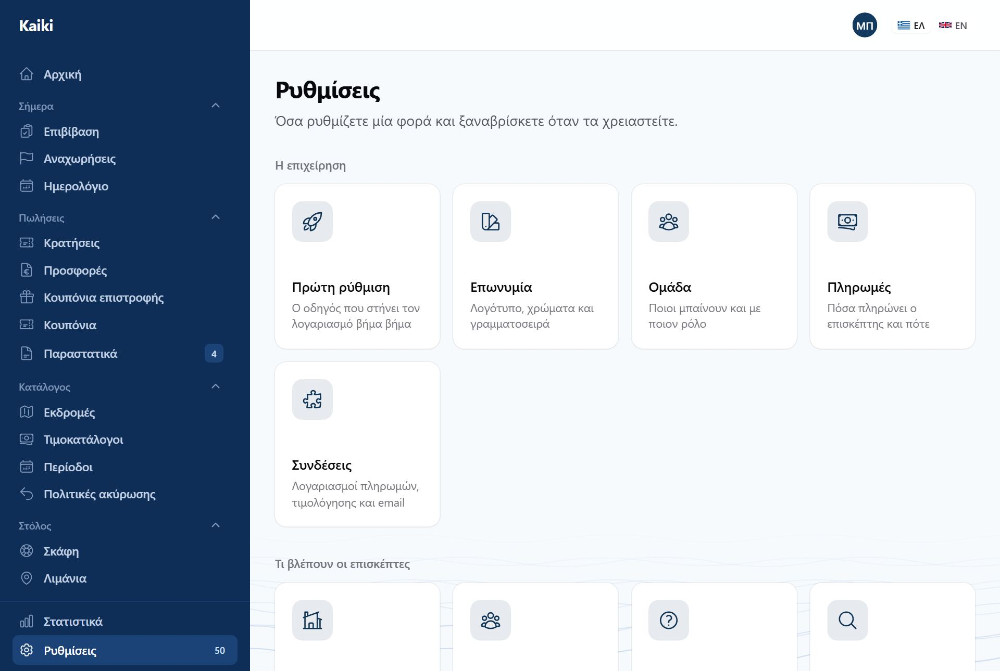
Ρυθμίσεις. Δεκαέξι κάρτες σε τέσσερις ενότητες, τέσσερις ανά σειρά. Κάθε
κάρτα έχει εικονίδιο, τίτλο και μισή πρόταση για το τι κάνει· πατάτε και μπαίνετε.
Οι ενότητες είναι τέσσερις: Η επιχείρηση (επωνυμία, ομάδα,
πληρωμές, συνδέσεις), Τι βλέπουν οι επισκέπτες (αρχική σελίδα,
συχνές ερωτήσεις, σελίδα αναζήτησης, η ιστοσελίδα σας), Ιστορικό και
αρχεία (τι πήγε στραβά, μηνύματα, εξαγωγές, ιστορικό ενεργειών) και
Για προχωρημένους (συγχρονισμός ημερολογίου, κλειδιά API, webhooks,
εισαγωγή από WooCommerce).
Στην κορυφή κάθε οθόνης υπάρχει «Πίσω στις ρυθμίσεις».
Ο κόκκινος αριθμός πάνω στις Ρυθμίσεις στο μενού είναι όσα
έχουν αποτύχει στο «Τι πήγε στραβά» — ώστε να το βλέπετε χωρίς να ανοίξετε
τίποτα.
Ο καθένας βλέπει μόνο τις κάρτες που του επιτρέπει ο ρόλος του.
Ο υπεύθυνος δεν βλέπει «Συνδέσεις», «Πληρωμές» και «Εισαγωγή από
WooCommerce». Το πλήρωμα δεν βλέπει καθόλου «Ρυθμίσεις».
Οι διευθύνσεις των οθονών δεν άλλαξαν, οπότε ένας σελιδοδείκτης σε μία από
αυτές δουλεύει όπως πριν.
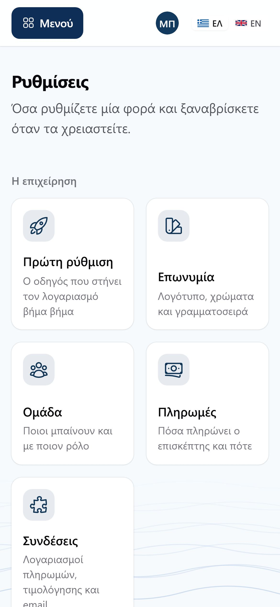
Στο κινητό. Δύο κάρτες ανά σειρά. Όπου το κείμενο θέλει μία γραμμή
παραπάνω, η κάρτα μεγαλώνει αντί να το κόψει.
Κλειδιά API
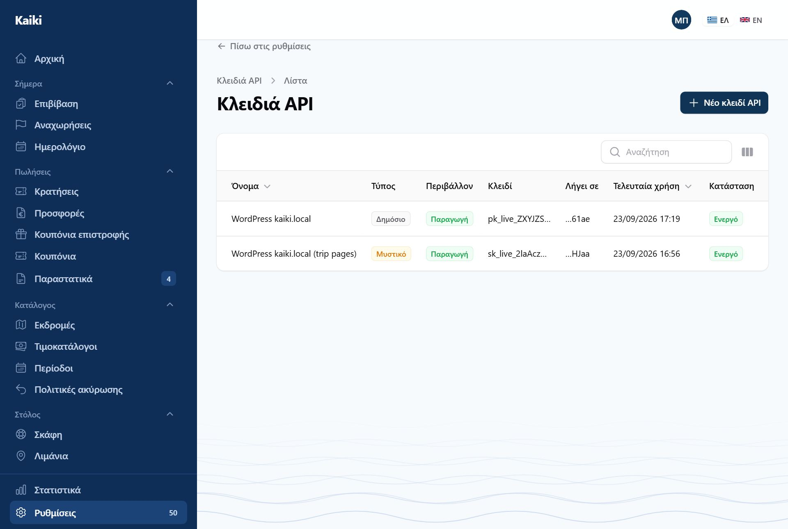
Κλειδιά API. Δημόσια για τη φόρμα κράτησης, μυστικά για σύστημα προς
σύστημα.
Μία φορά
Το μυστικό κλειδί εμφανίζεται μόνο τη στιγμή που το δημιουργείτε.
Αν χαθεί, δεν ανακτάται — φτιάχνετε καινούριο και ακυρώνετε το παλιό. Έτσι
πρέπει: ένα μυστικό που μπορεί να ξαναδιαβαστεί από μια οθόνη δεν είναι μυστικό.
Webhooks
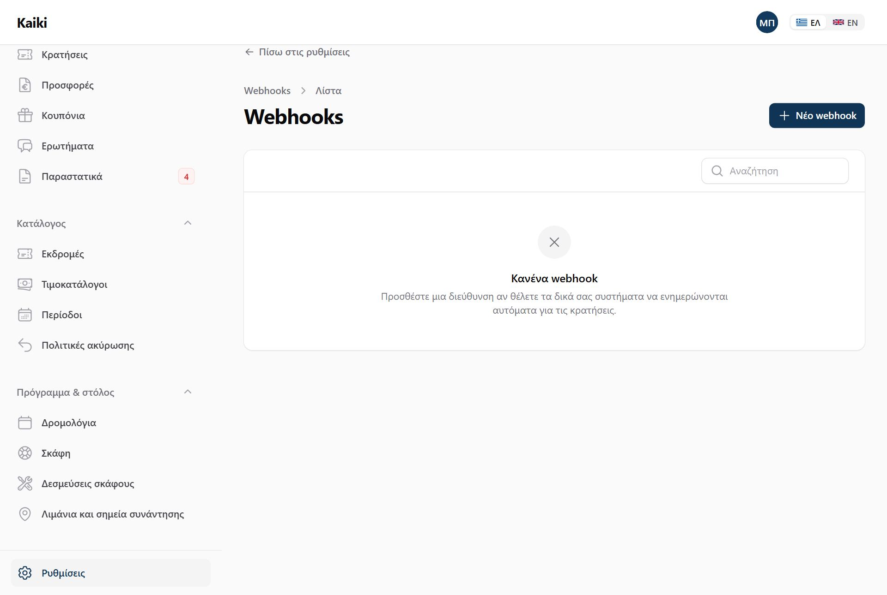
Webhooks. Για να ειδοποιείται ένα άλλο σύστημα — λογιστικό, CRM,
αυτοματισμός — μόλις κάτι συμβεί εδώ.
Δηλώνετε μια διεύθυνση και ποια γεγονότα σας ενδιαφέρουν: επιβεβαίωση κράτησης,
ακύρωση κράτησης, ακύρωση αναχώρησης, συμπλήρωση στοιχείων επιβατών.
Κάθε αποστολή υπογράφεται, ώστε ο παραλήπτης να μπορεί να
επιβεβαιώσει ότι ήρθε πράγματι από εσάς.
Αν αποτύχει, ξαναπροσπαθεί — οκτώ φορές, με αυξανόμενα
διαστήματα, από δέκα δευτερόλεπτα μέχρι δώδεκα ώρες.
Υπάρχει ιστορικό παραδόσεων ανά διεύθυνση: τι στάλθηκε, πότε,
και τι απάντησε.
Οι δοκιμαστικές και οι εισαγόμενες κρατήσεις
δεν στέλνουν ποτέ webhook.
Τα webhooks είναι μέρος του πακέτου Pro. Στα άλλα πακέτα, στη θέση
του «Νέο webhook» υπάρχει «Αναβάθμιση πακέτου», και πάνω από τη λίστα εξηγείται
γιατί. Όσα webhooks είχατε ήδη συνεχίζουν να στέλνουν.
Συγχρονισμός ημερολογίου
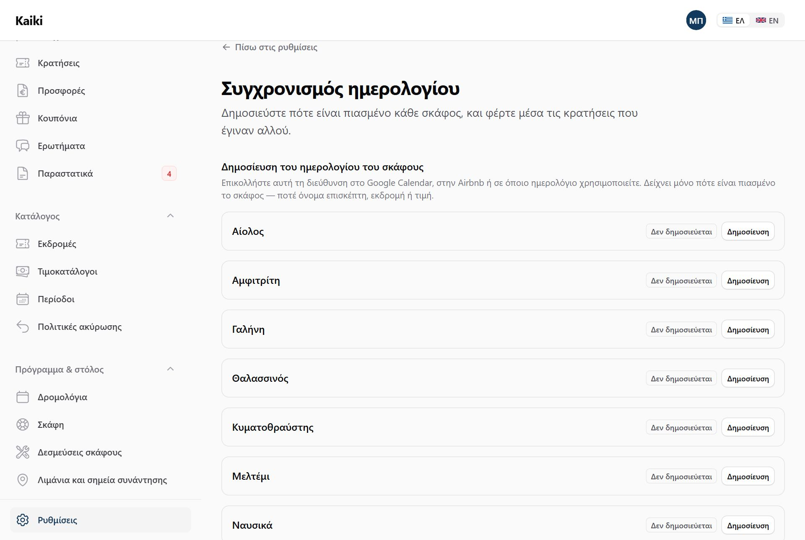
Ημερολόγιο προς τα έξω, και προς τα μέσα.
Προς τα έξω: ένας σύνδεσμος που ανοίγει τις αναχωρήσεις σας σε
Google Calendar, Apple ή ό,τι διαβάζει iCal. Δεν φεύγει κανένα στοιχείο επισκέπτη σε
αυτόν τον σύνδεσμο.
Προς τα μέσα: δηλώνετε ημερολόγια άλλων πλατφορμών και οι
δεσμεύσεις τους μπλοκάρουν το σκάφος εδώ — ώστε να μην πουληθεί δύο φορές η ίδια
μέρα.
Εισαγωγή από WooCommerce
Αν πουλούσατε εκδρομές με WordPress, WooCommerce και YITH Booking, τις φέρνετε εδώ
με δύο αρχεία — και πρώτα βλέπετε τι θα γίνει. Τίποτα δεν γράφεται πριν πατήσετε
«Εισαγωγή».
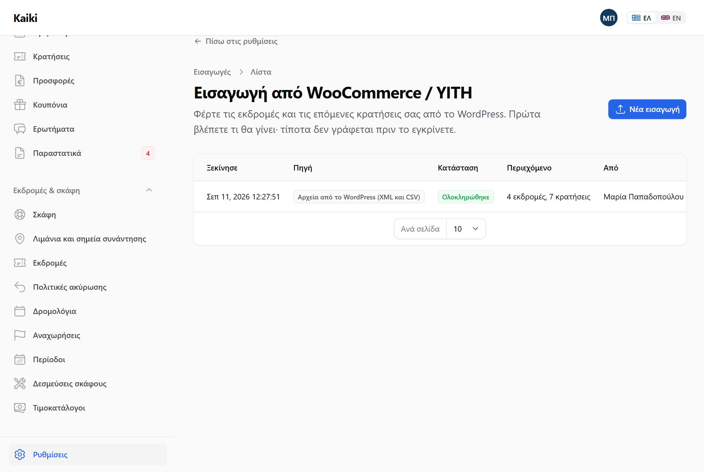
Εισαγωγές. Κάθε εισαγωγή που έγινε: πότε, από ποιον, σε ποια κατάσταση και
τι περιείχε. Από εδώ ξεκινά και η καινούργια.
Στο WordPress σας κατεβάζετε δύο αρχεία: την εξαγωγή των προϊόντων
(Εργαλεία → Εξαγωγή → Προϊόντα, ένα αρχείο XML) και τις κρατήσεις του
YITH (Κρατήσεις → Εξαγωγή, ένα αρχείο CSV).
Εδώ πατάτε Νέα εισαγωγή, ανεβάζετε τα δύο αρχεία και
«Ανάγνωση αρχείων». Αρκεί και μόνο το ένα.
Σε λίγα δευτερόλεπτα ανοίγει ο Έλεγχος εισαγωγής: τι βρέθηκε και
τι προτείνεται. Αλλάζετε ό,τι θέλετε και «Αποθήκευση επιλογών» — η λίστα από
κάτω ξαναγράφει τι θα γίνει, χωρίς να γράψει τίποτα ακόμη.
Όταν συμφωνείτε, Εισαγωγή.
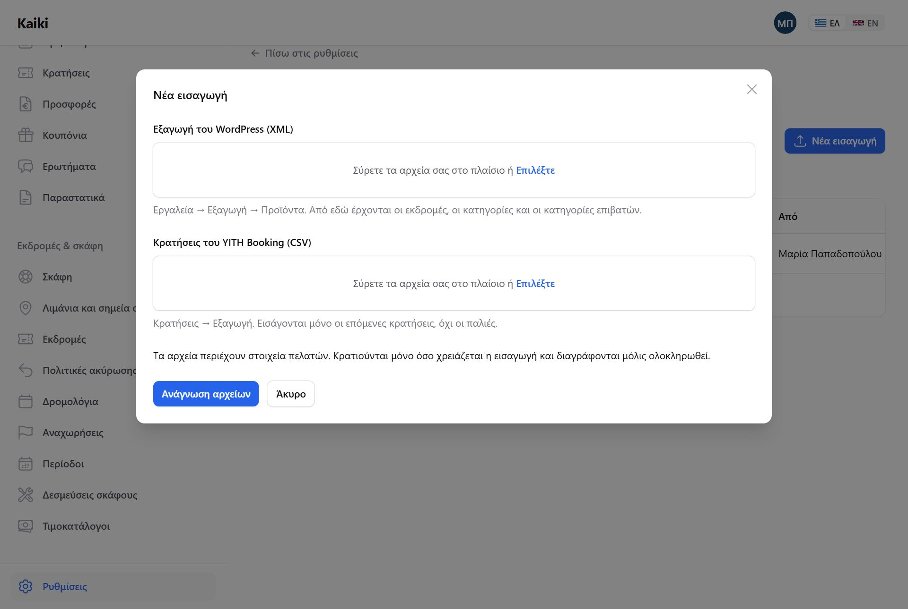
Δύο αρχεία. Περιέχουν στοιχεία πελατών, γι' αυτό κρατιούνται μόνο όσο
χρειάζεται η εισαγωγή και διαγράφονται μόλις ολοκληρωθεί.
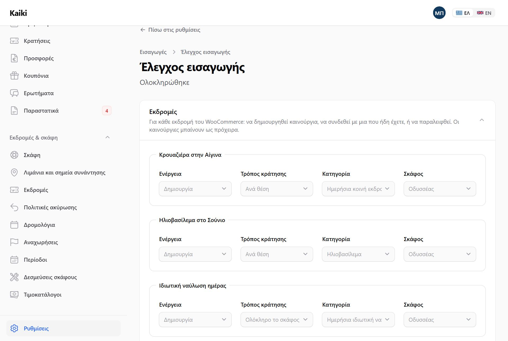
Έλεγχος εισαγωγής. Για κάθε εκδρομή: δημιουργία, σύνδεση με μια που ήδη
έχετε, ή παράλειψη — και σε ποιο σκάφος. Από κάτω, τι έγινε με κάθε εγγραφή και
γιατί.
Στον έλεγχο αποφασίζετε τρία πράγματα:
Τις εκδρομές. Όποια έχει τον ίδιο τίτλο με εκδρομή που ήδη
έχετε, προτείνεται να συνδεθεί με αυτήν αντί να γίνει δεύτερη. Τα απλά
προϊόντα του καταστήματος — ένα καπέλο, ένα μπλουζάκι — παραλείπονται. Αν έχετε
πάνω από ένα σκάφος, διαλέγετε σε ποιο πάει η καθεμιά.
Τις κατηγορίες επιβατών του YITH: ποια γίνεται ενήλικας, παιδί,
βρέφος, από ποια ηλικία και αν πιάνει θέση.
Από ποια ημερομηνία εισάγονται κρατήσεις. Εξ ορισμού από σήμερα·
οι παλιές μένουν στο WooCommerce.
Τι παραλείπεται, και γιατί
Κάθε εγγραφή που δεν εισάγεται γράφει τον λόγο της δίπλα της: κράτηση για
περασμένη ημερομηνία, κράτηση ακυρωμένη στο WooCommerce, κράτηση για εκδρομή που
δεν υπάρχει στο αρχείο, προϊόν που δεν είναι εκδρομή. Ένα «παραλείφθηκε» χωρίς
λόγο θα ήταν μια κράτηση που χάθηκε.
Οι εκδρομές μπαίνουν ως πρόχειρα. Δεν τις βλέπει κανείς μέχρι να
τις δημοσιεύσετε, με την ίδια λίστα ελέγχου όπως κάθε εκδρομή. Το WooCommerce
έχει το κείμενο σε μία γλώσσα· μπαίνει και στα ελληνικά και στα αγγλικά, και
σας το σημειώνει για να το διορθώσετε.
Οι κρατήσεις μπαίνουν επιβεβαιωμένες, σιωπηλά. Κανένας επιβάτης
δεν λαμβάνει email ή SMS, δεν εκδίδεται κανένα παραστατικό και δεν φεύγει κανένα
webhook. Όπου χρειάζεται, δημιουργείται η αναχώρηση, ώστε οι θέσεις να είναι
πραγματικά πιασμένες.
Δεν φτιάχνει ποτέ διπλά. Αν ανεβάσετε το ίδιο αρχείο δεύτερη
φορά, ό,τι έχει ήδη εισαχθεί γράφει «Είχε ήδη εισαχθεί» και δεν ξαναδημιουργείται.
Αν σταματήσει στη μέση, «Συνέχεια εισαγωγής»: συνεχίζει από εκεί
που έμεινε, χωρίς να ξαναγράψει ό,τι έγινε.
Δεν φτιάχνει σκάφη. Κάθε εκδρομή πάει σε σκάφος που ήδη
έχετε — γι' αυτό προσθέστε πρώτα τα σκάφη σας.
Η οθόνη είναι μόνο για τον ιδιοκτήτη. Σήμερα δουλεύει με αρχεία· η
απευθείας σύνδεση με τον ιστότοπο WordPress, με κλειδιά, δεν έχει φτιαχτεί ακόμη.
Συνδέσεις
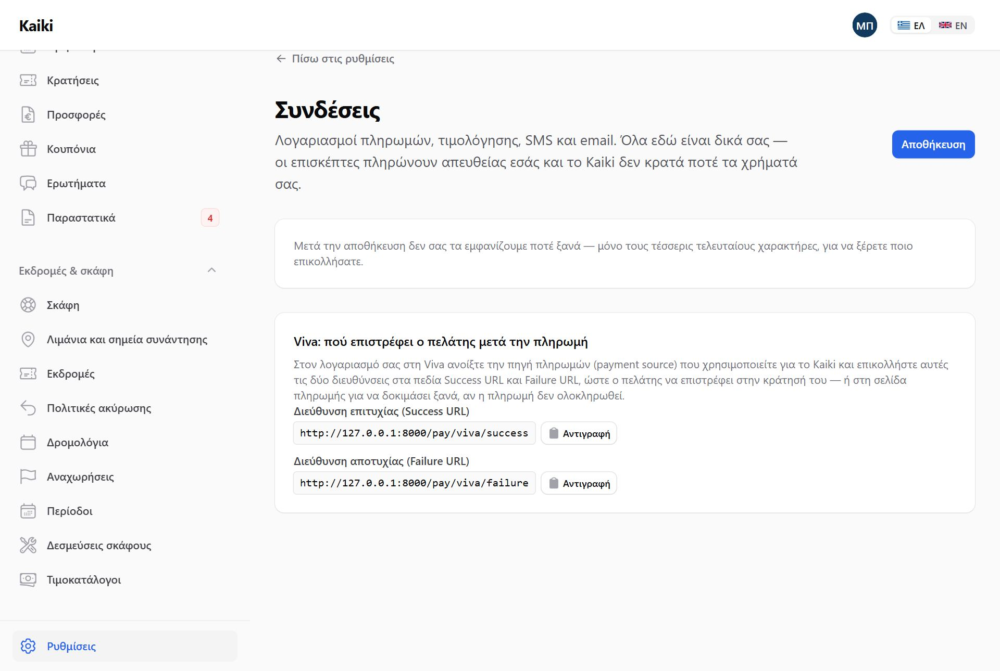
Συνδέσεις. Τα διαπιστευτήρια της τράπεζας ή του παρόχου πληρωμών, και ό,τι
άλλο μιλά με τρίτο σύστημα.
Εδώ μπαίνουν τα κλειδιά της Viva. Ρυθμίσεις → Συνδέσεις → «Αποθήκευση
διαπιστευτηρίων», και διαλέγετε Viva Wallet και περιβάλλον
δοκιμαστικό ή κανονικό. Τρία πεδία, και τα τρία τα βρίσκετε στον
δικό σας λογαριασμό Viva:
Αναγνωριστικό πελάτη (Client ID) και Μυστικό πελάτη
(Client secret) — από τις ρυθμίσεις API του λογαριασμού σας.
Κωδικός πηγής πληρωμής (Source code) — η «πηγή» που έχετε
δηλώσει στη Viva για αυτό το κατάστημα.
Προαιρετικά, το μυστικό υπογραφής webhook, ώστε να
επιβεβαιώνεται ότι η ειδοποίηση πληρωμής ήρθε πράγματι από τη Viva.
Τα χρήματα δεν περνούν από εμάς
Τα διαπιστευτήρια είναι δικά σας και ο επισκέπτης πληρώνει
απευθείας στον δικό σας λογαριασμό Viva. Το Kaiki δεν κρατά ποτέ
τα χρήματά σας και δεν βλέπει ποτέ αριθμό κάρτας — η κάρτα δίνεται στη σελίδα της
Viva, όχι εδώ.
Τα μυστικά αποθηκεύονται κρυπτογραφημένα και δεν ξαναδείχνονται.
Η οθόνη κρατά μόνο τα τέσσερα τελευταία ψηφία για να αναγνωρίζετε ποιο κλειδί
είναι. Αν αλλάξετε μόνο τον κωδικό πηγής, αφήνετε τα πεδία των μυστικών κενά και
μένουν ως έχουν.
Η οθόνη είναι μόνο για τον ιδιοκτήτη. Διαχειριστές και πλήρωμα δεν
τη βλέπουν καθόλου.
Μηνύματα
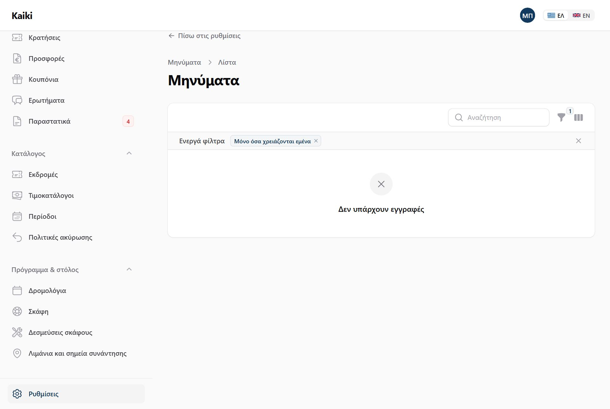
Μηνύματα. Κάθε email που έφυγε προς πελάτη: τι, σε ποιον, πότε, και αν
παραδόθηκε.
Όταν κάτι αποτύχει, ο λόγος γράφεται στα ελληνικά και υπάρχει κουμπί επανάληψης.
Τι πήγε στραβά
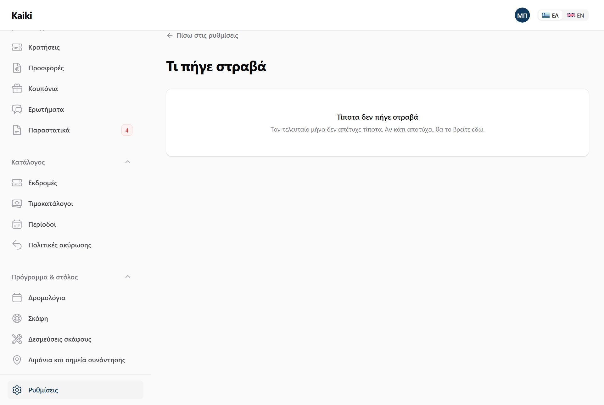
Τι πήγε στραβά. Μία λίστα με ό,τι προσπάθησε το σύστημα και δεν τα κατάφερε,
από έξι διαφορετικά σημεία.
Πληρωμές, μηνύματα, εισαγωγές ημερολογίου, εξαγωγές, webhooks και εισερχόμενες
ειδοποιήσεις πληρωμών — όλα σε μία οθόνη, με εξήγηση στα ελληνικά και, όπου η
επανάληψη έχει νόημα, κουμπί.
Η διαφορά από τα «Χρειάζονται προσοχή»
Το Τι πήγε στραβά είναι πράγματα που προσπάθησε το σύστημα. Τα
Χρειάζονται προσοχή στον πίνακα ελέγχου είναι πράγματα που περιμένουν
απόφαση δική σας. Η μία λίστα έχει κουμπί επανάληψης, η άλλη
χρειάζεται άνθρωπο.
Ιστορικό ενεργειών
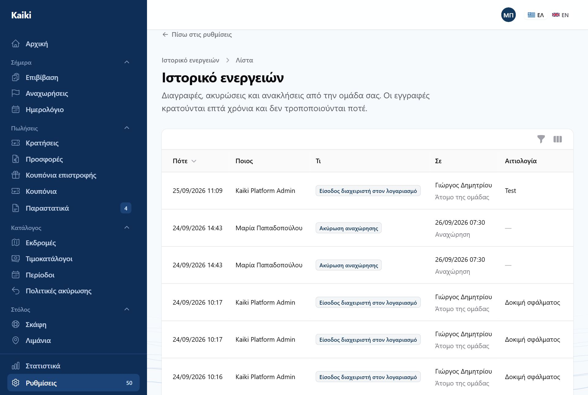
Ιστορικό ενεργειών. Ποιος έκανε τι και πότε — ακυρώσεις, επιστροφές,
αλλαγές τιμών, εμφάνιση αριθμών εγγράφων.
Δεν διαγράφεται και δεν επεξεργάζεται από κανέναν. Είναι η απάντηση στο «ποιος
ακύρωσε αυτή την αναχώρηση;» τρεις εβδομάδες αργότερα.
Πληρωμές
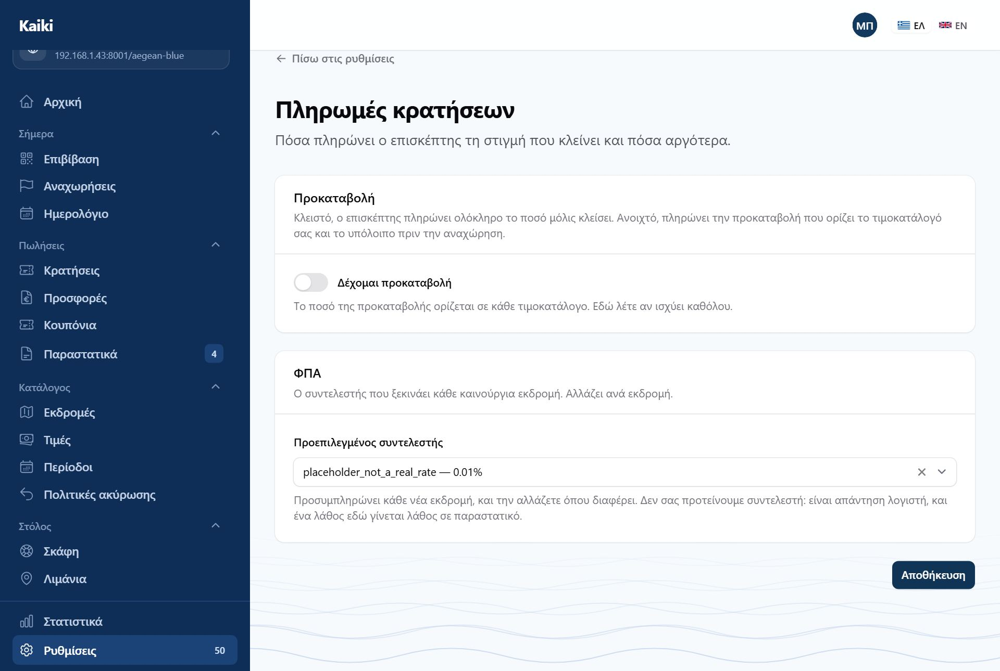
Πληρωμές. Πόσα πληρώνει ο επισκέπτης τη στιγμή που κλείνει, και πόσα
αργότερα.
Ένας διακόπτης: δέχομαι προκαταβολή. Κλειστός, ο επισκέπτης
πληρώνει ολόκληρο το ποσό μόλις κλείσει. Ανοιχτός, πληρώνει την προκαταβολή που
ορίζει ο τιμοκατάλογός σας — 30%, ή ένα σταθερό ποσό — και το υπόλοιπο πριν την
αναχώρηση.
Το πόσο είναι δουλειά του τιμοκαταλόγου· το αν είναι δική σας. Ο
τιμοκατάλογος όριζε προκαταβολή από την πρώτη μέρα, και δεν υπήρχε τρόπος να πείτε
«όχι στο δικό μου σκάφος» παρά μόνο γυρίζοντάς την σε «καμία» σε κάθε τιμοκατάλογο
χωριστά. Αυτή η οθόνη το λέει μία φορά, για όλα.
Μόλις τον ανοίξετε εμφανίζεται και το δεύτερο πεδίο: πόσες μέρες πριν την
αναχώρηση λήγει το υπόλοιπο. Ο επισκέπτης παίρνει υπενθύμιση με σύνδεσμο
πληρωμής. Αν το αφήσετε κενό ισχύουν 14 ημέρες.
Κλειστό εξ αρχής
Η προκαταβολή δεν είναι μία ρύθμιση αλλά μια αλυσίδα: μένει
υπόλοιπο, φεύγει υπενθύμιση, ο επισκέπτης ξαναμπαίνει να πληρώσει, και κάποιος
κυνηγάει όποιον δεν το κάνει. Γι' αυτό ξεκινά κλειστή για όλους — κανείς δεν
πρέπει να βρεθεί μέσα σε αυτό επειδή έτσι ήταν το προεπιλεγμένο.
Η οθόνη είναι μόνο για τον ιδιοκτήτη, όπως και τα κλειδιά πληρωμών:
είναι απόφαση για τα χρήματα, όχι για την καθημερινή λειτουργία.
Άλλες δύο οθόνες
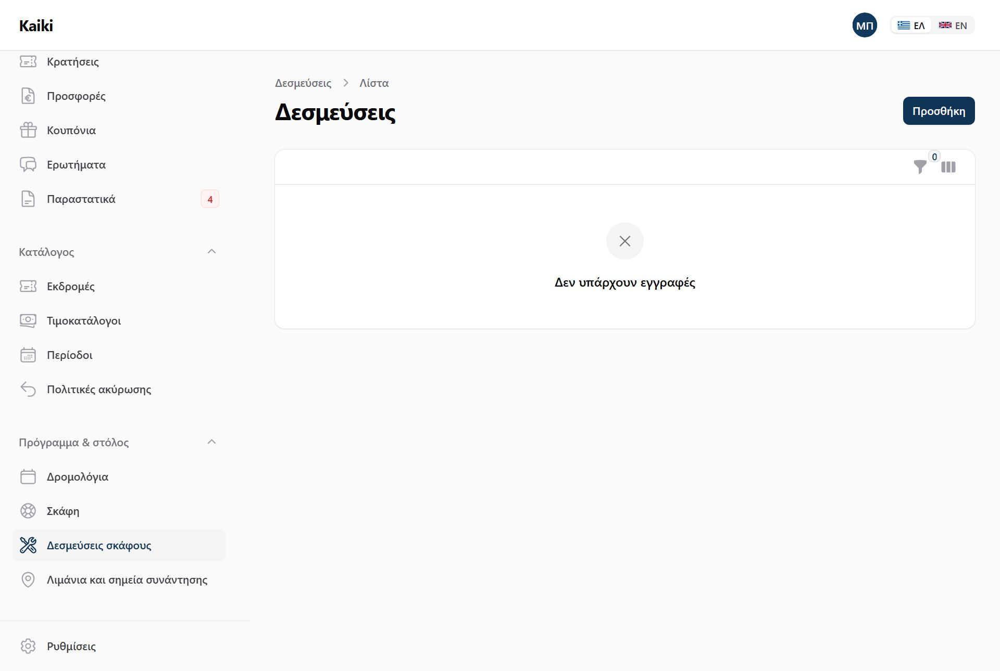
Δεσμεύσεις σκάφους. Συντήρηση, ιδιωτική χρήση, οτιδήποτε κρατά ένα σκάφος
εκτός πώλησης. Ό,τι βάζετε από το ημερολόγιο εμφανίζεται κι εδώ.
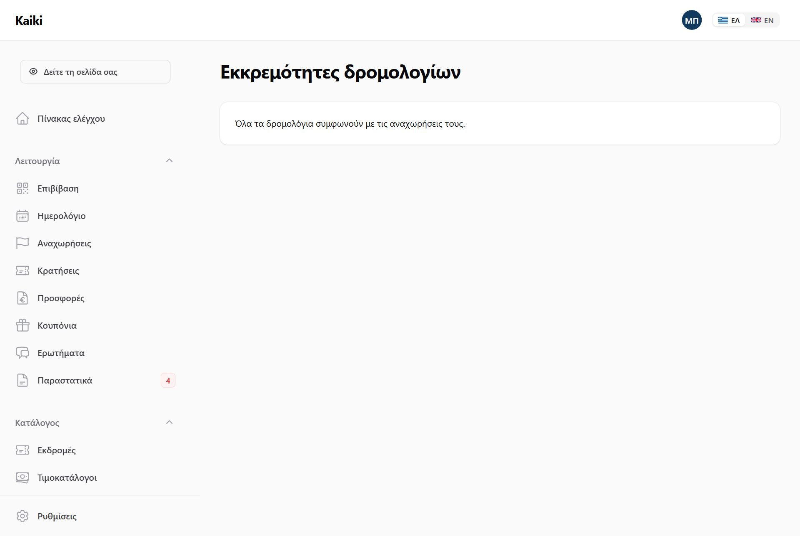
Συμφωνία αναχωρήσεων. Όταν αλλάξετε ένα δρομολόγιο, εδώ βλέπετε τι
διαφέρει ανάμεσα στον κανόνα και στις αναχωρήσεις που έχουν ήδη παραχθεί — και
αποφασίζετε τι θα γίνει με καθεμιά.